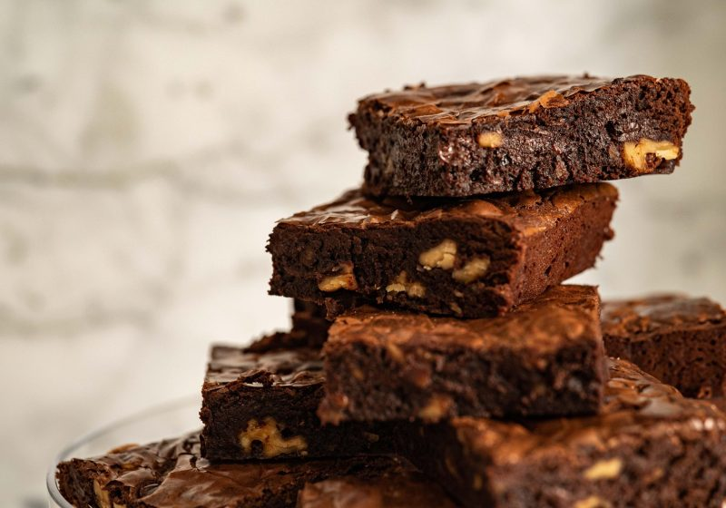

Retornar para a Página Inicial
Brownie

Brownie de chocolate
Receita inspirada na Paola Carosella
Acesse aqui a receita original
Características
Preparo simples
Rendimento de aproximadamente 12 pedaços
Tempo de preparo: 40 minutos
Ingredientes
120 gramas de manteiga sem sal
120 gramas de chocolate amargo 70%
150 gramas de açúcar branco refinado
3 ovos temperatura ambiente
40 gramas de cacau amargo em pó
160 gramas de chips de chocolate
60 gramas de farinha de trigo
pitada de sal fino
Modo de preparo
unte uma forma com manteiga e polvilhe farinha de trigo.
Pre aqueça o forno a 180 graus.
Em uma panela, derreta a manteiga em fogo médio até dourar, desligue o fogo e acrescente o café solúvel e o chocolate amargo picado.Misture e reserve.
Em uma tigela misture os ingredientes secos e peneire. Reserve.
Misture ovos com açúcar e bata com com batedeira elétrica por aproximadamente 10 minutos
Misture o chocolate derretido na manteiga aos ovos, acrescente os ingredientes secos
Misture com ajuda de uma espátula.
Coloque na forma e leve ao forno por tempo aproximado de 20 a 25 minutos.
Retire, deixe esfriar e corte.
ESPECIFICAÇÕES DO BROWNIE
Informação
Detalhes
Tempo de Preparo
40 min
Tempo de Forno
20 a 25 min
Temperatura
180 graus
O tempo de forno depende do forno utilizado.